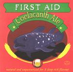

| Artist: | First Aid |
| Title: | Coelacanth Ale |
| Label: | self produced |
| Length(s): | 74 minutes |
| Year(s) of release: | 2000 |
| Month of review: | [01/2002] |
| 1) | Fraternizing With The Enemy | 1.07 |
| 2) | Dedrok | 3.26 |
| 3) | Stop Trying To Be Important | 5.18 |
| 4) | ?? | |
| 5) | The Clean Forest | 6.45 |
| 6) | City Lights | 3.57 |
| 7) | Rut Of Information | 3.13 |
| 8) | Take It On The Amber | 5.14 |
| 9) | Unique New York | 5.55 |
| 10) | Who Killed Janet Smith? | 2.19 |
| 11) | Wasting Away | 4.25 |
| 12) | The S.S. Song | 4.03 |
| 13) | R.P.R.S.S. | 5.22 |
| 14) | ?? | |
| 15) | Because You Need Me | 4.32 |
| 16) | Ice Age | 5.00 |
| 17) | The Eight | 3.30 |
| 18) | Murray's Stolen Board | 9.02 |
After a promising beginning, Stop Trying To Be Important develops into a jazzy Camel like track which stays rather subdued throughout. The Clean Forest reminds me of quite a few prog bands: there is something of Camel, Genesis and Finch in here. The drums sound a bit dry, but it is certainly a very nice track. Later on the music gets to be more experimental and reminds me of Djam Karet.
City Lights has a Nude feel over it. Not surprising maybe with this title. A rather commercial sounding tune with boring drums. Follow up Rut Of Information is a bit overly simple.
Take It On The Amber has rather mediocre drumming and reminds me a bit of The Police. Later it gets to be more introvert, but the rock returns at the endagain. A good song, but lacking in the execution.
Unique New York opens loosely with a bluesy feel, but turns for the psychedelic later on: slow lazy rock. Keyboards in the style of ELP and military drums dominate on Who Killed Janet Smith? while Wasting Away brings us a bit too little: we have low zooming bass tones, a piano tinkling away, and a rather commercial sounding intermezzo. The vocalist, although he sings a bit lower, sings a bit like Sting.
The S.S. Song (the title has nothing to do with fascism) is a melodious and somewhat folky one. The guitar sound is rather heavy. The sound of the song increases in fullness throughout.
After the question answer game between guitar and keyboards on R.P.R.S.S. we come to the meandering guitar of Because You Need Me. Productionally not strong, like most of the album, it comes close to later more commercial Finch sound. Lots of soloing on this one and the melodies are good.
Skipping from a dreamy opening to riff dominated rock, Ice Age has a bit of a King Crimson feel in the guitarwork. Again the sound the quite hollow and dull. After the Crimsonesque guitar loops of The Eight we come to the long closer Murray's Stolen Board on which we first get a long rhyme about well, Murray's Stolen Board, and afterwards we get a long atmospheric passage with Floydian guitar playing and later bass with only shards of guitar.